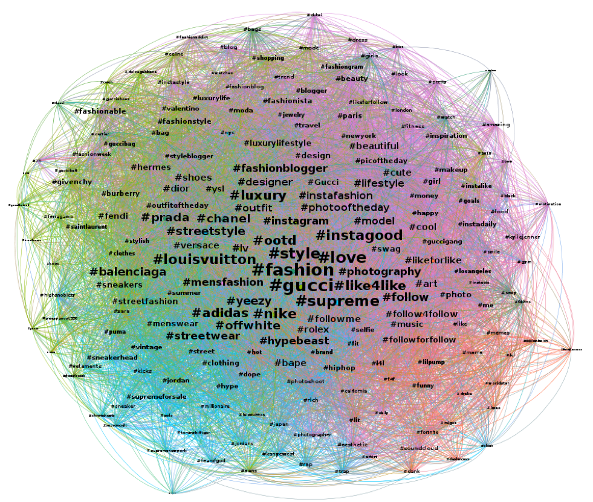

Social Network Analysis on '#gucci' on Instagram
The paper analyzes the hashtags which are tagged together with ‘#gucci’ in Instagram in order to gain the text data regarding changed brand image of Gucci after Creative Director Alessandro Michele since 2015. It is obvious that Gucci and Kering group where Gucci belongs to gained huge increase of sales revenue, but it lacks objective qualitative data. The hashtags are gathered through Instagram Crawler code and the data is visualized through software Gephi. The data are sorted with criteria of degree centrality and modularity. When it is sorted in degree centrality, highly placed street brands and sport brands related hashtags are the most significant result. When it is sored in modularity, the hashtags are divided into five groups: fashion, Instagram popularity, other brands name, men’s fashion, and culture. Design and marketing strategies can be implemented through using customer’s real reaction toward the brand and the products of the brand.
Keywords: SNA, Instagram, hashtag, fashion, luxury brand, Gucci, Alessandro Michele